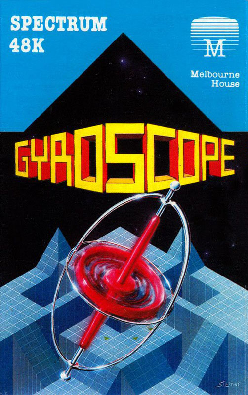
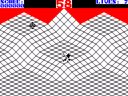

Gyroscope


{kind=link}

| Publisher: | Melbourne House |
| Price: | £7.95 |
| Year: | 1985 |
| Source: | CRASH, Issue 23 |

Gyroscope puts you in a similar surrealistic situation to the arcade classic Marble Madness. The basic gameplay is very simple — you take control of a gyroscope with the task of getting from the starting post at the top of the course to the finishing post at the bottom within the allotted time. Each time the gyroscope topples, a life is lost. The course is very strange, presented with a surrealistic 3D effect featuring tall geometric buildings, ramps and steep slopes along and around which you have to guide your gyroscope. The course also provides a home for some rather strange (and vaguely familiar) aliens whose touch topples your spinner.
There are five courses in the run, each containing four screens. When you complete one screen the display turns purple and the next part of the course scrolls into view, replacing the section you’ve just traversed. The whole game is played against a clock, which ticks off the time relentlessly as you try to complete each quartet of screens. Completing each screen earns you bonus points, and completing a course of four screens earns you a bonus related to the amount of time remaining on the clock.

pilot your spinner across a three
dimensional landscape trying to avoid
spills.
You begin the game with seven lives in store, and pick up a bonus life for each 1,000 points scored. If you fail to complete a screen course within the time limit, the gyroscope topples when the count hits zero, a life is lost and you resume play from the spot you’d reached at timeout with the clock reset to start a new run. If things are going badly, you can press fire at any time and restart the game from scratch.
There are some very thin catwalks between the buildings and here the main danger lies. If you stray too near the edge of a construction or catwalk your gyro will become unbalanced and totter over — another life gone. When this happens your gyro is put back to the top of the screen on which you died, and thus time is lost as well as a life.
Taking control of a gyroscope takes some getting used to — once you start moving in one direction it takes a while to slow down. The beast will accelerate down slopes, and constant checks have to be made when you trundle down a slope to make sure you’re not going too fast — if there’s a sharp turn at the bottom you could find yourself in deep trouble, and run out of road.
Inanimate hazards on the course complicate matters further, and include glass slopes (which send you spinning in all directions), knobbly floors (which makes control of your gyro next to impossible), red discs (which send you completely out of control) and directional floors (which act like slopes only they’re flat).
The landscapes are very deviously created; starting from relatively easy they get more tricky very rapidly. Some of the difficult courses contain thin catwalks, horrendous slopes with tight corners, holes in the floor and combinations of all these with the aforementioned hazards — being a gyroscope isn’t all just spinning around.
CRITICISM
‘Although I’m not supposed to say it Gyroscope obviously owes a lot to the arcade classic Marble Madness. It’s graphically very similar and some of the gameplay elements are identical to the coin-op machine. That aside it’s a brilliant game in itself, difficult and frustrating at times, but well worth persevering with. The graphics are excellent, with fabulous use of normal/bright. The sound is pretty good too, with a nice atmospheric tune and sound effects. In my eyes this is one of the most addictive games I’ve played on the Spectrum and is one that any games player just can’t afford to miss.’
‘Gyroscope is the nearest thing we’ve had to Marble Madness on the Speccy. The graphics are a bit mixed in quality — I noticed rather a lot of flicker apparently due to the sound — but the 3D playing area is excellent. Controlling your gyroscope takes a lot of practice, and the inertia takes a bit of getting used to. The first couple of games are bound to lead to most of your lives being lost very swiftly. Care has to be taken at the beginning of each screen as you often start in a potentially hazardous position, like at the top of a steep slope or on a thin ledge. Generally I would strongly recommend Gyroscope as it is very playable and addictive.’
‘I’ve never seen Marble Madness in the arcades but if this is the nearest thing on a Spectrum to it then I’ve obviously been missing something very good. The graphics in this game struck me as being simple but effective, and without too many attribute problems. The best thing about Gyroscope, though, is that it is very playable and proves quite addictive. On the whole it is an extremely good game — but it might just become a little repetitive after a while. A neat arcade type game. If you know you like this game type then buy it!’
COMMENTS
| Control keys: | Q up, Z down, I left, P Right, O to abort |
| Joystick: | Kempston, Cursor, Interface 2 |
| Keyboard play: | Responsive |
| Use of colour: | Neatly done, minimising attribute problems |
| Graphics: | Simple design which is remarkably effective |
| Sound: | Excellent, two channel simulation |
| Skill levels: | Progressively more difficult |
| Screens: | Twenty |
| General rating: | Up with the best arcade games available for the Spectrum |
| Use of computer: | 93% |
| Graphics: | 94% |
| Playability: | 92% |
| Getting started: | 89% |
| Addictive qualities: | 92% |
| Value for money: | 93% |
| Overall: | 92% |